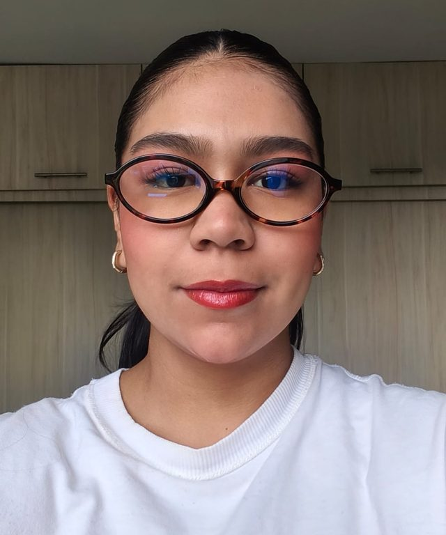

Ingeniera en formación · IA, nube y robótica
Ingeniería que convierte ideas en soluciones reales
Desarrollo proyectos de inteligencia artificial, computación en la nube y robótica, con enfoque, empatía y aprendizaje continuo.
Desarrollo proyectos de inteligencia artificial, computación en la nube y robótica, con enfoque, empatía y aprendizaje continuo.

Soy una persona amable y dedicada, que escucha y trabaja con paciencia. No les temo a las dificultades: las veo como parte del camino hacia la profesional que quiero ser.
Soy estudiante de octavo semestre de ingeniería informática con énfasis en inteligencia artificial y computación en la nube, y tengo facilidad para desarrollar proyectos tecnológicos. Cuento con experiencia en proyectos que integran IA y robótica.
Fundé y dirigí un emprendimiento de servicio técnico de computadores, donde gestioné el trato con proveedores como técnica certificada en el área. Además, soy deportista de alto rendimiento, una disciplina que me enseñó constancia y compromiso. Mi nivel de inglés es B1 y lo estoy fortaleciendo.
Ser feliz y vivir plenamente a pesar de las dificultades, ejerciendo con excelencia una profesión que amo: crear soluciones con IA y nube que aporten valor real.
En 5 años, ser una ingeniera reconocida en IA aplicada y robótica, que lidera proyectos innovadores con impacto social y equilibrio personal.
Toca cada tarjeta para ver el detalle.
Un prototipo para personas con discapacidad visual que une visión por computador, hardware y modelos de lenguaje.
Este proyecto demuestra mi forma de trabajar: convertir una idea en algo que funciona, en equipo y con soluciones técnicas claras.
Una ingeniera que combina IA, robótica y nube con enfoque y adaptación, y que aporta proyectos interesantes a tu organización.
Compañías de tecnología, software y transformación digital que buscan talento joven con proyectos reales.
Líderes que valoran la confiabilidad, la adaptación y las ganas de crecer dentro del equipo.
Equipos que necesitan a alguien que aprenda rápido, escuche y entregue prototipos.
Las personas que trabajan y se relacionan conmigo suelen describirme así.
Transmito serenidad y estabilidad, incluso en momentos de presión.
Tengo claro qué profesional quiero ser y avanzo con constancia hacia esa meta.
La exigencia de una deportista de alto rendimiento se refleja en mi estudio y mi trabajo.
Escucho, comprendo y trato a los demás con amabilidad.
Cumplo mis compromisos y respondo por lo que asumo, solo o en equipo.
Aprendo rápido nuevas herramientas y me ajusto a distintos entornos.
Descarga mi hoja de vida y visita mis perfiles profesionales.